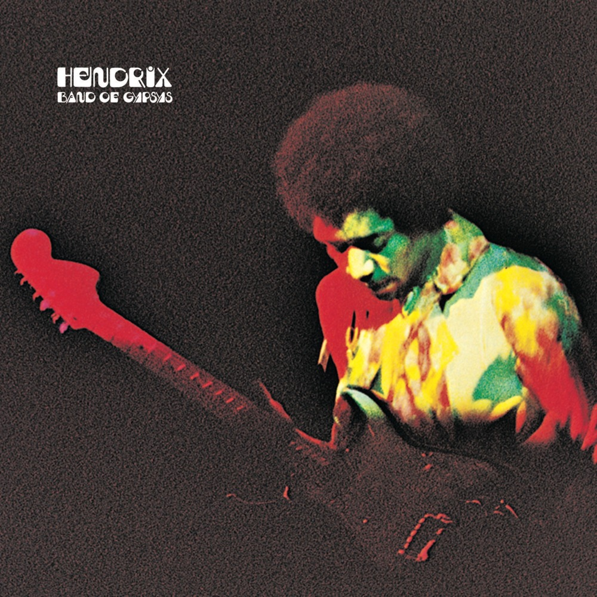
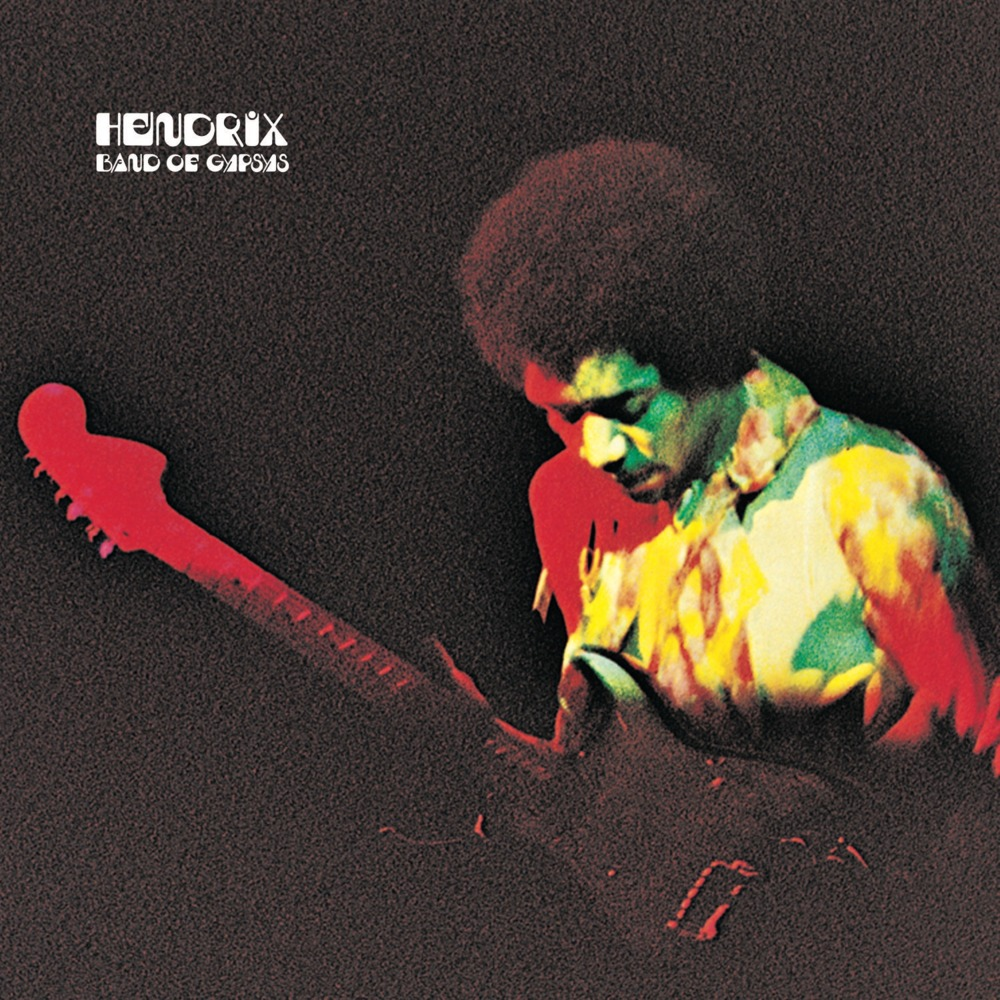

JIMI HENDRIX
ARE YOU EXPERIENCED?
Released 1967
Musicians:
- Jimi Hendrix, Guitar & Vocals
- Mitch Mitchell, Drums & Backing vocals
- Noel Redding, Bass guitar & Backing vocals
Are You Experienced is the debut studio album by the Jimi Hendrix Experience. Released in 1967, the LP was an immediate critical and commercial success, and it is widely regarded as one of the greatest albums of all time. The album features Jimi Hendrix's innovative approach to songwriting and electric guitar playing which soon established a new direction in psychedelic and rock music as a whole music.

Side One
- Foxy Lady
- Manic Depression
- Hey Joe
- Love or Confusion
- May This Be Love
- I Don't Live Today
Side Two
- The Wind Cries Mary
- Fire
- 3rd Stone
- Foxey Lady
- Are You?
In 2014 Mojo magazine listed "Are You Experience" as the greatest guitar album of all time.
The budget for the recordings was rather limited so Chas Chandler (producer) and Hendrix completed much of the albums's pre-production work at their shared apartment.
Chas Chandler, producer
Are You Experienced sold more than one million copies within seven months of its release.
AXIS: BOLD AS LOVE
Released Dec 1967
Musicians:
- Jimi Hendrix, Guitar & Vocals
- Mitch Mitchell, Drums & Backing vocals
- Noel Redding, Bass guitar & Backing vocals
Axis: Bold as Love is the second studio album by the Jimi Hendrix Experience. It was first released by Track Records in the United Kingdom on December 1, 1967, only seven months after the release of the group's highly successful debut, Are You Experienced. In the United States, Reprise Records delayed the release until the following month. The album reached the top ten in the album charts in both countries.
 

Side One
- Exp
- Up from the Skies
- Spanish Castle Magic
- Wait Until Tomorrow
- Little Wing
- If Six Was Nine
Side Two
- You've Got Me Floating
- Castle Made of Sand
- One Rainy Wish
- Bold as Love
The second Experience album, Axis: Bold as Love, opens with the track "EXP", which uses microphonic and harmonic feedback in a new, creative fashion. Leaving it in the back seat of a London taxi.
The scheduled release date for Axis was almost delayed when Hendrix lost the master tape of side one of the LP.
Chas Chandler, producer
Are You Experienced sold more than one million copies within seven months of its release. Are You Experienced sold more than one million copies.